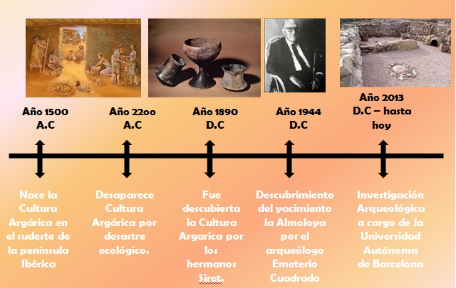

Ubicación
La Almoloya se encuentra ubicada entre los municipios de Pliego y Mula en el centro de la Región de Murcia, España. El cerro que le da nombre cuenta con una altitud de 561 metros y una superficie total de 3.800m² con una estructura caliza, plana y llana, junto a amplios campos forestales (40% de la superficie total) y parajes de vegetación natural. El terreno posee importantes barrancos, como también numerosos cerros y cadenas montañosas que superan los 500 metros de altitud, desde el que se goza de un amplio dominio visual de gran parte de la Comarca del Río Mula. Geológicamente, La Almoloya se presenta como un cerro testigo de un amplio sinclinal. Su masa es parte de un potente banco calizo desaparecido en los contornos, perteneciente a las formaciones eocenas, constituidas principalmente por conglomerados y calizas nummulíticas.3 El camino y subida a la Almoloya está situado en dirección sudoeste, el ascenso al cerro, es muy complejo pues presenta varios desniveles y además de ser estrecho por lo cual solo permite el ascenso de una persona a la vez. El acceso al agua se obtenía por manantiales cercanos como La Portuguesa (a 2100 metros), las Anguilas (a 2200 metros) y Fuente la Higuera (a 3300 metros).
Yacimiento
El yacimiento de La Almoloya presenta un asentamiento en el que habitarían aproximadamente 250 personas entre los años 2200-1550 a. C., es decir, que estuvo activo durante más de 600 años, siendo un centro de concentración política y riqueza de primer orden dentro del territorio político.4 Luego de ese tiempo, las ruinas quedaron en total abandono. Los pobladores de La Almoloya vivían en una sociedad estratificada jerarquizada, vertical o piramidal, eso significa que había personas que daban órdenes y que funcionaban por mecanismos de obligación para que otras personas obedecieran. La sociedad Argárica brinda una de las manifestaciones arqueológicas más importantes del inicio de la Edad del Bronce, con un importante legado patrimonial. El Argar desarrolló técnicas cerámicas sofisticadas. Su minería y la metalurgia era bastante avanzada, con el bronce, la plata y el oro que se extraía, posiblemente desde la mina del As, se trabajaba en las armas y las joyas..
